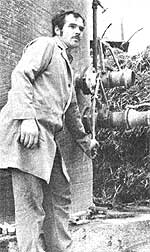

When the only gasoline pump in a tiny village on Switzerland's Lake Leman runs dry, local farmer Manfred Steiner will still be able to deliver milk from his 25 cows . . . because-with the flip of a switch-his station wagon runs on homegrown fuel!
You see, there's a huge manure pile on the Steiner place, just as there is on most every farm in the neighborhood . . . but Manfred has put his dung heap to work producing methane! And, besides using the gas to provide himself with transportation, the young farmer transforms a portion of his "cow power" into electricity that heats his dwelling and runs all the electrical equipment around the barns and house . . . and the Swiss innovator still has enough homemade voltage left over to sell some to the local power plant.
"The whole system cost me close to $20,000," explains Monsieur Steiner, "but it will pay for itself in eight years. Why, during the first winter alone it saved me about $3,000!" (With oil prices skyrocketing, the enterprising dairyman will probably amortize his "plant" even sooner than he originally projected!)
Back in the early 70's, young Steiner became fascinated with the idea of making his farm energy self-sufficient.
"The thought of my dependency on imported oil used to keep me lying awake nights," he recalls. "If some emir out there had decided to turn off the tap, all I could have done was chop wood . . . and there's not all that much wood to spare on my land."
Years ago, the scientist Louis Pasteur suggested that gas from putrefying organic matter could light the Paris street lamps, and Manfred-during his studies at Berne's Agricultural College-had heard of World War II farms and vehicles that operated on "trash fuel". Finally, he decided to try it himself.
Of course, Steiner already had the manure pile and a compost ditch, and soon had added a silo equipped with heating coils at its base . . . as well as a second silo to store the nitrogen-rich manure residue. Then, in Italy, he purchased a compact generator that was capable of converting the gas into electricity, and to store the methane-he was able to buy a heavy plastic balloon. By July 1978 Manfred's system was linked up, tested, and ready to go.
The dairyman contends that energy production adds no more than a few minutes to his regular chores. After he cleans out the cow stalls, he shovels the manure from the bottom of the pile into a cement ditch that collects the liquid overflow. Then, holding an electrically powered "mixer" by its long handle, he minces the mix in the ditch. This odorous soup is pumped into the digester silo and heated to 95°F to trigger fermentation. When the "brewing" takes place, anaerobic micro-organisms break down the organic matter to produce a gas that's two-thirds methane and one-third carbon dioxide.
Next, the gas inflates a large plastic balloon, which is almost as high as the barn next to it. During the day, as its methane is drawn off into the generator to supply the needs of Manfred's milking machinery or of Madame Steiner's washing machine, the balloon gradually deflates.
The resourceful young farmer also compresses a portion of his supply of pure methane gas . . . and fills a container with enough fuel to run his car for 90 miles.
This year, the Swiss have twice voted on the atomic energy policies of the world's smallest democracy. During the campaigns, nuclear opponents publi cized Manfred Steiner's experiments, and argued: "The manure from all of Switzerland's farms could save the country at least one nuclear plant.
" Well aware that the country imports oil to cover 75% of its energy needs, the nation's federal treasurer-who bosses Switzerland's limited budget-recently dropped by the Steiner farm for a chat . . . and a spin in Manfred's methane-powered Fiat. Noting that 100 cows can daily produce the energy equivalent of 30 kilos of petroleum, the government representative did a little mental arithmetic and exclaimed, "Why, if all our farmers did this, we'd save about 400,000 metric tons of fuel a year!
" He even felt the government might subsidize the installations. "But," the treasurer amended prudently, "just at the beginning."
Although hundreds of people have dropped in to look at the operation, Manfred's closest neighbors are cautious. "So far," he comments, "they just watch and wait."
However, the new generation of Swiss farmers is far more enthusiastic than are the old-timers, and-during the winter-Steiner regularly lectures on self-sufficient energy methods at a nearby agronomical college. So far, though, there are probably no more than 15 other farmers in the country using "biological gas" and only Manfred has converted it to electricity . . . two-thirds of which he's able to sell.
"The utility is paying me 6 cents against the 14-1/2 cents it charges customers in this area," he points out, a bit disgruntled. "I feel the company should give me more."
Last fall, with the manure-powered system working nicely, Manfred set up a new experiment. After his grain harvest, he fed the stalks into the digester and discovered that the straw he produced on his farm-when "doctored" with regular doses of anaerobic bacteria-could produce the equivalent of 3,000 liters of petroleum products.
Steiner's next goal is to convert his tractors and a jeep to run on methane. "If I change over the additional vehicles, it should save me another $4,000 a year," he grinned.
And not only has the Swiss farmer solved his personal energy crisis, but all the residue from the "biogas" operation that's stored in the second silo provides him with a supply of fully deodorized fertilizer! "It's as good as the original manure . . . and far better than any chemical substitute," says Steiner, who's sold on organic farming.
Meanwhile, around his stone farmhouse, the brown and white cows munch their way across the pasture . . . as uninterested in the fabulous view of the Alps as in the fact that they may solve some of Switzerland's energy problems.
"We may not have oil," the farseeing farmer shrugs, "but we sure do have cows!"
|
 |
|
|